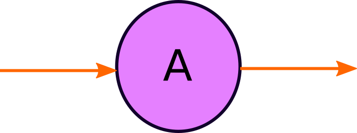
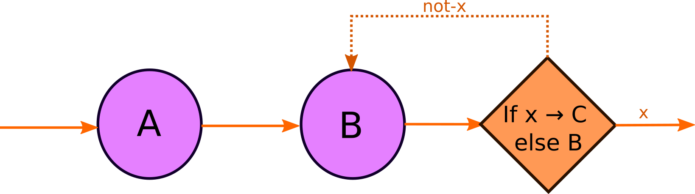
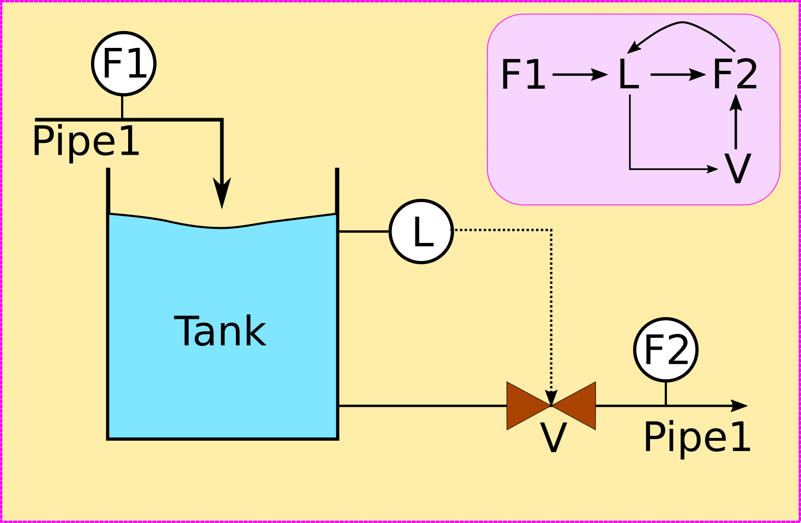

Engineering Principles I:
Flows
Dr Shane V Crowley
Press down for controls and right to progress
Interacting with the Slides
üì∫Full screen: press the F key
üéÆView video controls: hover cursor over video
üë©‚Äçüé® Draw: click icon or press C
üåàPen colour: press X to cycle and Y to revert
üíÅ Options and Info: click icon or press M
To view the video just type this into your browser:
üëâhttps://youtu.be/HFpslm8j3fU
Click for print version (not recommended)üëà
Lecture Plan: Engineering Principles
- The Nature of Process flows
- Overview of transformative operations
- The concept of scaling up
Process Flows
Processes Are Ordered
What is the Ordering Factor?
Inter-dependency
A meal-replacement beverage is being manufactured. First various powders are mixed in water. Then the beverage is sterilised in a heat exchanger. A problem arises when deposits keep forming inside the heat exchanger, reducing the effectiveness of heating and the quality of the product.
What might be the root cause of the problem here?
Processes can Loop
Processes are Complex
CORRECTION: pipe on bottom right should be "pipe 2"Topological Connection
CORRECTION: pipe on bottom right should be "pipe 2"The Power of Abstraction
Causal Connection
 CORRECTION: pipe on bottom right should be "pipe 2"Loops can be Efficient
Processes Contain:
- Transformative Operations
- Non-transformative Operations
- Sensors
- Actuators
- Connectors
- Materials
It is common to "abstract away" from many (not all!) of these
Conclusion
Learning about food processing is more than learning about how a particular food is made or how a particular machine works, it is also about the nature of the connections between different kinds of element in a process and their inter-dependencies.
Next lecture
Transformative Operations
shane.crowley@ucc.ie